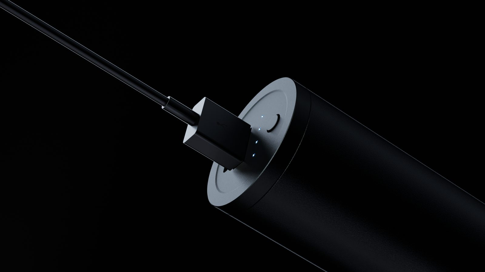

Render nhanh hơn trong Blender Cycles: 10 thứ cần chỉnh trước khi đổ lỗi cho máy

Render lâu không phải là cái giá bắt buộc của hình đẹp. Phần lớn thời gian bị đốt vào những thứ không hiện lên trong khung hình — và cắt chúng đi thì ảnh không xấu đi chút nào.
Dưới đây là những thứ tôi kiểm tra theo đúng thứ tự này mỗi khi một cảnh render lâu bất thường. Bảy trên mười lần, dừng ở bước ba là xong.
1. Đặt ngưỡng nhiễu, đừng đặt số sample
Trong Render Properties → Sampling → Render, thứ quyết định thời gian không phải Max Samples mà là Noise Threshold. Bật Adaptive Sampling, để ngưỡng khoảng 0.01, Max Samples để cao (2000–4096) và Min Samples quanh 32.
Cycles sẽ tự dừng ở từng vùng ảnh khi vùng đó đủ sạch. Vùng trời phẳng dừng ở 60 sample, vùng kim loại phản chiếu chạy tiếp tới 800 — thay vì cả ảnh phải chạy 800 chỉ vì một góc.
2. Denoise là bắt buộc, không phải tuỳ chọn
Bật OpenImageDenoise ở mục Denoise, với Albedo và Normal làm pass phụ trợ. Có denoise, cùng một chất lượng nhìn thấy được, bạn cần ít hơn khoảng ba tới bốn lần số sample.
Cách sai hay gặp: đẩy sample lên thật cao để hết nhiễu rồi mới denoise. Thứ tự đúng ngược lại — giảm sample tới mức denoise còn cứu được, và dừng ngay ở đó.
3. Cắt bounce và clamp ánh sáng gián tiếp
Ở Light Paths, mặc định Total 12 bounce là thừa cho gần như mọi cảnh sản phẩm. Hạ Total xuống 4–6, Diffuse 2, Glossy 3, Transmission 6 (giữ cao nếu có kính hoặc chất lỏng).
Sau đó đặt Clamp → Indirect khoảng 10. Nó chặn những chấm sáng lẻ (fireflies) — thứ khiến bạn phải tăng sample gấp đôi chỉ để dập vài chục pixel.
4. Filter Glossy và Fast GI
Filter Glossy ở mức 1.0 làm mờ nhẹ caustic phản chiếu; mắt gần như không thấy khác, nhưng nhiễu giảm rõ. Với cảnh nội thất hoặc cảnh nhiều ánh sáng dội, bật Fast GI Approximation giúp giảm đáng kể thời gian mà bố cục sáng vẫn giữ nguyên.
5. Chọn đúng thiết bị và backend
Trong Preferences → System, card NVIDIA nên chọn OptiX thay vì CUDA — chênh lệch thường thấy rõ. Card AMD dùng HIP, máy Apple Silicon dùng Metal. Ở Render Properties → Device nhớ đặt GPU Compute; rất nhiều người chỉnh Preferences xong quên bước này và vẫn render bằng CPU.
6. Bật Persistent Data khi render dãy hình
Performance → Final Render → Persistent Data giữ cảnh đã dựng trong bộ nhớ giữa các frame, thay vì tải lại từ đầu mỗi frame. Với animation, riêng cái này có thể cắt vài giây mỗi frame — nhân với 500 frame thì không nhỏ. Đổi lại là tốn RAM, nên tắt đi nếu cảnh quá nặng.
7. Volumetric — chỗ đốt thời gian số một
Khói, sương, ánh sáng thể tích đắt hơn mọi thứ khác trong cảnh cộng lại. Nếu cảnh có volume, chỉnh Volumes → Step Rate Render lên cao hơn (bước dài hơn, tính ít lần hơn) và hạ Max Steps. Với sương môi trường mỏng, khác biệt hình ảnh gần như bằng không.
Tốt hơn nữa: tách volume ra render riêng thành một layer và ghép lại ở compositing — sửa nồng độ sương sau đó không phải render lại cả cảnh.
8. Texture 4K chỉ dùng ở bản cuối
Bảng Simplify có Texture Limit riêng cho Viewport và Render. Đặt viewport ở 1024 để thao tác mượt. Và thành thật: một vật thể chiếm 200 pixel trên khung hình không cần texture 4K — hạ xuống 2K, VRAM thở ra và tốc độ tăng.
9. Instance thay vì nhân bản
Copy bằng Alt+D (linked duplicate) hoặc bằng Geometry Nodes cho ra instance dùng chung dữ liệu lưới. Copy bằng Shift+D nhân toàn bộ dữ liệu lên. Với một cảnh có vài trăm vật thể lặp lại, khác biệt về bộ nhớ và thời gian tải cảnh là rất lớn.
10. Render vùng, và render nháp cho tử tế
- Render Region (
Ctrl+Btrong camera view). Đang sửa vật liệu ở một góc thì chỉ render đúng góc đó. - Resolution 50%. Đủ để đánh giá ánh sáng và bố cục. Chỉ 100% ở bản cuối.
- Dựng sáng bằng EEVEE. Căn hướng và cường độ ở EEVEE cho nhanh, chuyển Cycles ở bước hoàn thiện.
Bảng ưu tiên khi cần cắt thời gian gấp
| Thao tác | Mức tiết kiệm | Rủi ro mất chất lượng |
|---|---|---|
| Bật denoise, hạ sample | Rất cao | Thấp |
| Noise Threshold 0.01 | Cao | Thấp |
| Hạ bounce + clamp indirect | Cao | Thấp – trung bình |
| Tăng Step Rate cho volume | Cao (nếu có volume) | Trung bình |
| OptiX / GPU đúng thiết bị | Cao | Không |
| Hạ texture xuống 2K | Trung bình | Thấp |
| Hạ độ phân giải bản cuối | Cao | Cao — đừng |
Thứ không nên đụng vào
Đừng cắt độ phân giải bản giao khách, đừng tắt hẳn denoise vì "nó làm mất chi tiết" (bản OIDN mới giữ chi tiết tốt hơn nhiều so với tiếng đồn), và đừng hạ Transmission bounce nếu cảnh có kính — kính sẽ đen thui và bạn sẽ mất cả buổi đi tìm nguyên nhân.
Nếu sau tất cả những thứ trên cảnh vẫn nặng, vấn đề thường không nằm ở render setting mà ở cách cảnh được dựng: quá nhiều đa giác cho thứ không ai nhìn thấy. Đó là chuyện của khâu modeling — và cũng là lý do nên học đúng thứ tự ngay từ đầu.
Toàn bộ phần render setting này có bản chi tiết hơn, kèm ảnh chụp từng bảng, trong Cẩm Nang Blender 3D tải miễn phí.
Muốn được sửa bài trực tiếp?
Coaching 1:1 online, đồng hành trọn một năm. Để lại thông tin, tôi xem qua và tư vấn bạn nên bắt đầu từ đâu.
Đăng ký tư vấn